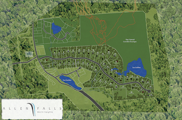

Nos projets, situés dans les laurentides offrent un vaste choix de terrains, offrant différents avantages, bord de lac, vue panoramique, ski-in-ski-out, location court terme..
est un projet dont les terrains sont spacieux et boisés et certains sont même au bord d'un lac privé. Vous avez également le choix entre un terrain disposant d'une vue ou alors d'une orientation plein sud. Tout près du Centre de Ski Morin-Heights, plus l’accès au réseau de sentiers de ski de fond et de raquette de 130km linéaires, dont 65 km sont tracés mécaniquement par la Ville de Morin-Heights, sentiers pédestres et vélo de montagne, sans oublier l'accès direct au corridor aérobique. Il s'agit d'un choix idéal pour les amateurs de plein air et de calme car le projet est bordé par plus de 300 acres de réserve naturelle protégée. Localisé à seulement 10 min de Saint-Sauveur et de l'autoroute 15, tous les services seront à votre portée.
à Morin-Heights est composée de 25 terrains prêts à être construit. Une architecture contrôlée permet une harmonie à travers le projet. Les terrains variants de 15,000 pi2 allants jusqu'à 200 000 pi2 sont boisés avec une vue sur la vallée de Saint-Sauveur et une orientation plein sud. Blue Ridge est l'emplacement idéal pour les amateurs de plein air et de tranquillité. Le projet est à proximité du centre de Ski Morin-Heights et donne accès à des dizaines de kilomètres de sentier de ski de fond, raquette, sentiers pédestres et vélo de montagne et ce tout près du corridor aérobique. Avec toutes les facilités du village de Morin-Heights le développement est situé seulement à 10 minutes de Saint-Sauveur et de l'autoroute 15.
Les terrains sont situés directement sur les pentes de ski du sommet Morin Heights et donnent sur la piste Hurtubise. Le projet propose un mode de vie exceptionnel. La remontée mécanique Kicking Horse est à quelques mètres du projet. Très beaux terrains boisés partiellement éclaircie sur le bord des pistes de ski alpin du sommet Morin Heights avec un zonage locatif à court terme. Il y a possibilité de générer des revenus locatifs importants grâce aux attraits à proximité et à l'aide d'une gestion locative uniformisée à la carte. Magnifique vue panoramique sur la vallée de Saint-Sauveur a plus de 15 kilomètres, L'emplacement parfait pour un pied-à-terre dans les Laurentides. Pour les amateurs de plein air, Accès à une multitude de sentiers de ski de fond, raquette, sentiers pédestres et vélo de montagne et près du corridor aérobique.
Situé sur un site naturel d’exception dans un endroit très tranquille de Morin Heights, le projet du Lac Rustique est composé de terrains boisés allants de 46 390 pi2 à 271 290pi2. Les terrains offrent une superbe vue sur l’eau et la vallée. Vous retrouverez au lac Rustique, une Forêt mature ainsi qu’une faune abondante entourant le magnifique lac qui fait l’endroit idéal pour les amateurs de plein air. Le projet donne Accès à plusieurs sentiers de ski de fond, raquette, sentier pédestre et de vélo ce directement des terrains. Le projet est situé à 5 minutes du centre-ville de Morin-Heights, à 4 kilomètres de la station de ski et à moins de 8 minutes de Saint-Sauveur. Il fait bon de vivre au Lac Rustique pour être à proximité de tous les attraits et services tout en étant en pleine nature.
Le projet offre des terrains entre 62,800 pi2 à 113,600 pi2, avec orientation sud-ouest dans la cour arrière donnant sur le magnifique Lac Hendrix à Morin-Heights, à moins de 5 kilomètres du village de Morin-Heights et à 3 minutes des pentes de ski et accessible par un chemin municipal asphalté. Accès à plus de 100 kilomètres de sentier de ski de fond, raquette, sentier pédestre et de vélo ce directement du lac Hendrix. L'architecture est contrôlée et la construction de qualité est offerte par Invesco Construction
Aux limites de Morin-Heights, se trouvent des terrains de très grandes superficies. Vous trouverez à quelques minutes du projet le magnifique village de Sainte-Adolphe-d'Howard avec une épicerie et tous les services essentiels. Il fait bon de vivre aux Terres val des Monts pour être en pleine nature tout en étant à proximité des services. Les terres Val des Monts ont des lots allant 60,000 à 575,000 pieds carrés. Forêt mature, ruisseau, ski de fond, raquette, proximité motoneige et VTT ces terrains sont parfaits pour les amateurs de plein air. Le lac Depatie se trouve à distance de marche du projet. De plus les résidents des terres val des monts ont un accès à la descente à bateau du lac Sainte-Marie. Les sentiers de motoneige fédérée sont également accessibles à quelques minutes du projet